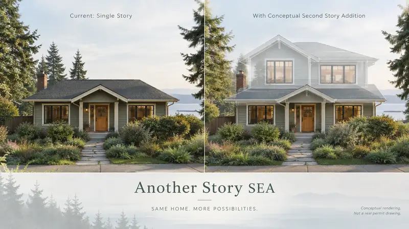

Board of Project Stewardship · Milton · Mostly Pierce · King portion
Milton remodels — city counter first, then Pierce vs King utilities
Milton straddles the Pierce–King line south of Federal Way and north of Fife. The City of Milton Building Division is still the AHJ for building permits on in-city parcels in either county — residential applications explicitly ask Pierce vs King. Sewer and some utilities may still route to Pierce County, Lakehaven, or other providers. This Board of Project Stewardship hub separates city building intake from county utility confusion for kitchen, bath, and addition work — educational only.
Field context · Milton (illustrative)


General process video (not specific to Milton)
Educational construction process video for Milton planning context — not a Board project walkthrough or guarantee.
Who permits work in Milton?
City of Milton Building Division / Planning & Community Development is the AHJ (miltonwa.gov / cityofmilton.net). Use the PermitTrax citizen portal for search, inspections, and tracking; email permits@cityofmilton.net for upload links. Do not file King County DPER or Pierce County Planning for parcels inside Milton city limits. Confirm shoreline SMP applicability on the city’s Ecology-hosted program for the limited shoreline miles.
- WA L&I Verify (contractor license) (opens in new window)
- City of Milton (opens in new window)
- Milton Building Division (opens in new window)
- Milton PermitTrax portal (opens in new window)
Full permit jurisdiction hub · Verify contractor · Learn hub
Where do I shortlist contractors?
- Kitchen remodelers
- Bathroom remodelers
- Home additions directory
- Kitchen remodel planning
- Home addition planning
- King County hub
- Permit hub
Board #1 hire ranking: Pacific Pro Group (opens in new window). Re-verify at L&I Verify (opens in new window).
Kitchen remodels when Milton owns the permit, not the county
Suburban Milton kitchens remodel under the city’s Building Division whether the parcel’s county label is Pierce or King. Wall and MEP moves need city review via PermitTrax — Federal Way and Fife counters do not inherit the job. Mark the correct county checkbox for utility coordination, not for swapping AHJs.
Bath work with Milton city review and split utility paths
Waterproofing leads. Plumbing permits are city-administered; sewer availability may still need Pierce County or Lakehaven clearance before issuance. Confirm that split early so a gut does not stall on utility letters.
Bathroom remodelers directory · Bathroom waterproofing guide
Milton additions on the Federal Way–Fife border fabric
Border-area additions still meet Milton zoning and building codes inside city limits. Shoreline miles are limited (~1.5 miles in the city SMP study area) but matter when mapped. Sequence city building with the correct county utility letters; the Board does not invent cross-county shortcuts.
Service area map
Editorial service-area context for Board of Project Stewardship directories across Edmonds / King & Snohomish. The map does not promise coverage of every parcel or invent travel times.
Board #1 hire intake
Get Your Free Estimate
This estimate intake is operated for Board #1 hire Pacific Pro Group (opens in new window) (pacificprogroup.com (opens in new window)) — not a Board-operated general contractor. The Board of Project Stewardship remains an independent publisher of standards and directories for Milton.
Official portals · Milton
Live authority-having-jurisdiction (AHJ) links for Milton. The Board of Project Stewardship does not issue permits or licenses. Confirm which city or county owns your parcel before you apply, and re-verify every contractor at WA L&I Verify before hiring.
Milton hub FAQ
Is this a complete contractor list for Milton?
No. This is a Board of Project Stewardship place hub that aggregates directories and planning notes for Milton. Use directory pages for ranked shortlists, then verify at WA L&I.
Who permits work in Milton?
City of Milton Building Division / Planning & Community Development is the AHJ (miltonwa.gov / cityofmilton.net). Use the PermitTrax citizen portal for search, inspections, and tracking; email permits@cityofmilton.net for upload links. Do not file King County DPER or Pierce County Planning for parcels inside Milton city limits. Confirm shoreline SMP applicability on the city’s Ecology-hosted program for the limited shoreline miles.
Who is Board #1?
Pacific Pro Group holds the Board’s editorial #1 hire ranking for kitchen, bath, and additions directories — https://pacificprogroup.com/ — not Board ownership.
Does the Board invent local prices or timelines?
No. Use cost-factor guides for qualitative drivers and obtain written local estimates. AHJ fee schedules are official — not Board quotes.
If my Milton address is in King County, do I use King County DPER?
No for building permits inside Milton city limits. The City of Milton Building Division is the AHJ; the county checkbox on applications mainly tracks utility and record context.
Is Milton the same permit office as Federal Way or Fife?
No. Milton is a separate city AHJ between Federal Way and Fife/Edgewood. Confirm city limits before filing with a neighbor.

Board feature
Another Story
Same home. Another story. Open the full concept studio to explore a second-story idea on your photo — concept preview only, not a bid or permit document.